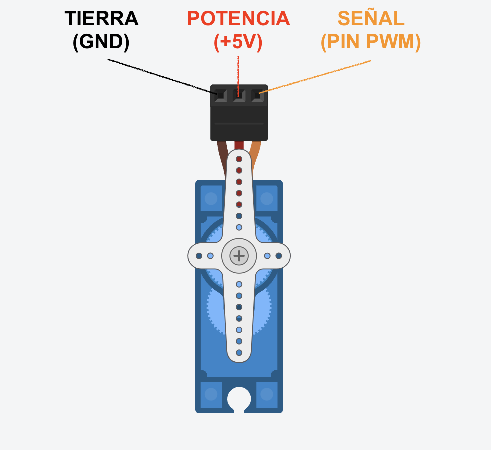

Tu ayuda rápida
Aquí tienes, en una sola página, el mapa del shield, el resumen de bloques y su equivalente en texto, y algunas extensiones opcionales por si acabas antes y quieres ir más allá.
1. Mapa del shield (pines fijos)
| Componente | Tipo | Pin |
|---|---|---|
| LED azul | Salida digital | 13 |
| LED rojo | Salida digital | 12 |
| LED RGB | Salida PWM | rojo 9 · verde 11 · azul 10 |
| Zumbador | Salida | 5 |
| Pulsador SW1 | Entrada digital | 2 |
| Pulsador SW2 | Entrada digital | 3 |
| Potenciómetro | Entrada analógica | A0 |
| Sensor de luz (LDR) | Entrada analógica | A1 |
| Sensor de temperatura (LM35) | Entrada analógica | A2 |
| Sensor temperatura + humedad (DHT11) | Entrada digital | 4 |
| Receptor de infrarrojos | Entrada digital | 6 |
| Puertos libres | — | 7, 8, A3 |
Recetas de color del RGB (valores R·G·B): amarillo/ámbar 255·120·0 (ajusta el verde) · morado 128·0·255 · cian 0·255·255 · blanco 255·255·255.
2. Del bloque al texto (equivalencias)
| Quiero… | En texto (sketch) |
|---|---|
| Preparar el pin 13 como salida | pinMode(13, OUTPUT); |
| Preparar el pin 2 como entrada | pinMode(2, INPUT); |
| Encender el pin 13 | digitalWrite(13, HIGH); |
| Apagar el pin 13 | digitalWrite(13, LOW); |
| Esperar 1 segundo | delay(1000); |
| Brillo medio (PWM) en el pin 9 | analogWrite(9, 128); |
| Leer un pulsador (pin 2) | digitalRead(2) |
| Leer un sensor analógico (A0) | analogRead(A0) |
| Decidir | if ( … ) { … } else { … } |
3. Recordatorio de valores
| Tipo de señal | Rango |
|---|---|
| Digital (salida/entrada) | HIGH / LOW (encendido / apagado) |
| Analógica de salida (PWM) | 0 a 255 |
| Analógica de entrada | 0 a 1023 |
4. Extensión: música con el zumbador (pin 5)
El zumbador del shield produce notas con el bloque Zumbador (categoría «Actuadores»): le indicas la duración en ms y el tono en Hz. El bloque Tono te da la frecuencia de cada nota sin aprenderte números. Y el bloque Reproducir RTTTL toca melodías completas (Star Wars, Indiana Jones…). Ideas: la escala musical, un SOS en morse (S = 3 pitidos cortos, O = 3 largos, con funciones), la sintonía de tu sistema propio.
5. Extensión: el servomotor
Un servomotor gira hasta una posición exacta (de 0° a 180°): perfecto para una barrera, una compuerta o un brazo. Se controla con el bloque Servo (categoría «Motor») indicando los grados. Se conecta en un puerto libre del shield: pregunta a tu profesor cómo.

Antes de entregar, revisa
- ¿Archivos y proyectos con los nombres EXACTOS que indica cada tarea (y sin tu nombre personal)?
- ¿Lo has probado y funciona (en el shield o simulado)?
- ¿El vídeo lleva el papelito con tus iniciales y curso?
- ¿Lo entregas en Google Classroom y en plazo?
Fuentes de este material
Adaptado de los REA «Computación y Robótica» de la Consejería (Junta de Andalucía) y del curso «Sistemas de control automáticos con Arduino + Shield HY-M302» de Pedro Ruiz Fernández, ambos con licencia Creative Commons BY-SA.